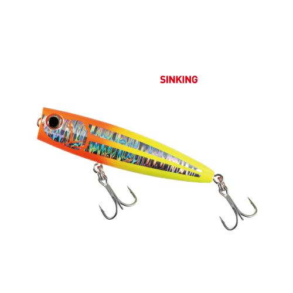
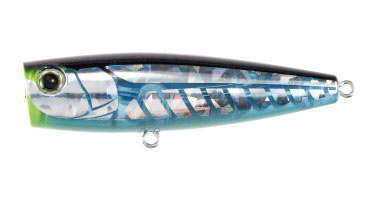
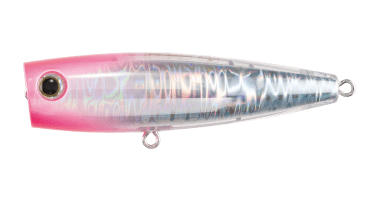
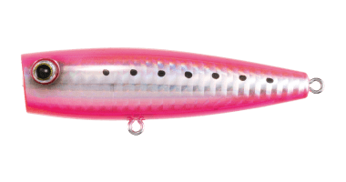
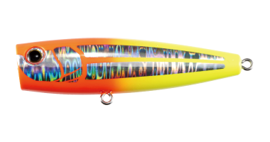

ポップクイーンS105
（シンキングポッパー）
ポップクイーンS105はMaria（マリア）のシンキングポッパーです。
ソルト用ポッパーの元祖ポップクイーンを、磯のヒラスズキゲーム向けにシンキング仕様へチューニングした「浮かないポップクイーン」の105mmモデル。MH〜Hクラスのロッドにしっかり重みが乗る30gで、波風の中でも広範囲の魚にルアーを見つけさせられるのが最大の魅力です。

画像出典:マリア公式HP
スペック
- メーカー
- Maria（マリア）
- タイプ
- シンキングポッパー
- 全長
- 105mm
- 自重
- 30g
- フック
- #2
- リング
- #6
- ターゲット
- ヒラスズキ・青物（ブリ・カツオ・シイラなど）
- 価格
- 2,728円（税込）
- 発売
- 2026年9月下旬
▼今すぐチェック

ポップクイーンS105の特徴
強い水押しと遠投性能で、荒れた磯を広く探る「先発」のポップクイーン
-
シンキング仕様で荒れた水面に張り付く
高比重のシンキング仕様にすることでルアー自体が波に噛みつき、荒れた水面にしっかり張り付く。波や強風でルアーが飛び出す「アクションエラー」を抑え、トップが使えないような荒れた日でも魚を引きずり出せる。
-
荒天を切り裂く飛距離
シンキング特有の高自重で風を切り裂く弾丸キャストが可能。強風や向かい風の荒磯でも、狙ったピンスポットやスリットへ正確に撃ち込める。MH〜Hクラスのロッドに重みを乗せやすいウエイト設定だ。
-
ヒラスズキから青物まで対応する汎用性
基本のドッグウォークに加え、ロッド先端を下げた高速リトリーブでは泡をまとった水面直下のS字スイミングを演出。ヒラスズキだけでなく、ブリ・カツオ・シイラなどの青物にも有効だ。
ポップクイーンS105の使い方
基本アクションはドッグウォーク。ロッドティップをリズミカルに小さくシェイクして、水面で左右に首を振らせる。移動距離を抑えられるので、シモリの上や狭いサラシにルアーを長く留めてパニックになった小魚を演出できる。
青物のボイルが出たらロッドを下げて高速リトリーブに切り替え、水面直下のS字スイミングで誘う。リアのブレードが適度な引き抵抗を生むため、足場の高い磯でも水面直下を引き続けやすいです。
ポップクイーンS105の得意な状況
白いサラシが大きく広がる荒れた磯で、ヒラスズキを広範囲にサーチしたい状況が最大の出番。
第一投で魚にルアーを見つけさせたい場面や、ヒラスズキ狙いの最中に青物が回ってくる可能性がある場面で選びたい1本です。
ワンポイント
推奨タックルは10〜11ftクラス（MH〜H）のロッドに、スピニング4000〜5000番、PE1.5〜2号＋ナイロンリーダー30〜40lbが目安です。
S105で反応がない時やベイトが小さい時は、同じシンキングのS80に落として食わせに切り替えると組み立てやすくなります。
ポップクイーンシリーズの使い分け
| モデル | 全長／自重 | 得意な場面 |
|---|---|---|
| F50 | 50mm／5g | フローティング・小型ベイトに合わせる最小サイズ |
| F80 | 80mm／14g | フローティング・扱いやすい定番サイズ |
| S80 | 80mm／19g | シンキング・荒れた磯での食わせ・マイクロベイト対応 |
| F105 | 105mm／25g | フローティング・ハイアピールな中型サイズ |
| S105 | 105mm／30g | シンキング・荒れた磯での広範囲サーチ・ハイアピール（本記事のモデル） |
| F130 | 130mm／37g | フローティング・青物向けの大型サイズ |
| F160 | 160mm／65g | フローティング・大型青物狙いのヘビーモデル |
| F200 | 200mm／100g | フローティング・PE6〜8号クラスのヘビータックル対応 |
ポップクイーンはフローティングのF50〜F200に加え、ヒラスズキ対応のシンキングモデルS80・S105を展開。S105は「先発」の広範囲サーチ担当、S80は「抑え」の食わせ担当という役割分担になっている。
オススメカラー
ポップクイーンS105は全6色展開。ヒラスズキゲームでオススメのカラーを厳選して紹介します。

004 ケイムラスリットグローケイムラ＋フラッシング＋腹部グローの全方位アピール。時化後の強い濁りの中でも存在を気づかせる。

006 サイトピンキークリアの透け感とピンクの視認性を兼ね備えた万能色。まず広範囲を探りたい時の先発に。

039 サラシピンク背中と腹部に蛍光ピンクを配色した超ハイアピール仕様。分厚いサラシやマズメ時に。

064 ウキ釣り用のウキをイメージした配色。荒波の中でもアングラーからルアーの位置を把握しやすい。
画像出典:マリア公式HP
ポップクイーンS105に似ているルアー
-
 ポップクイーンS80
マリア
詳細はこちら＞
ポップクイーンS80
マリア
詳細はこちら＞
同じ「浮かないポップクイーン」の80mm・19gモデル。ベイトが小さい時やシビアな状況で口を使わせる抑え役で、S105とセットで使い分けたい。
-
 ボアーSS145
マリア
詳細はこちら＞
ボアーSS145
マリア
詳細はこちら＞
同じマリアのロックショア青物専用ジャーキングミノー。磯から青物を狙う場面で、水面のポッパーと水面直下のミノーとして組み合わせやすい。
-
 チュパゾー60
ブルーブルー
詳細はこちら＞
チュパゾー60
ブルーブルー
詳細はこちら＞
ファットボディの強い水押しが特徴のペンシルベイト。水面でアピールして魚を引き出すトップの選択肢として重なる1本。